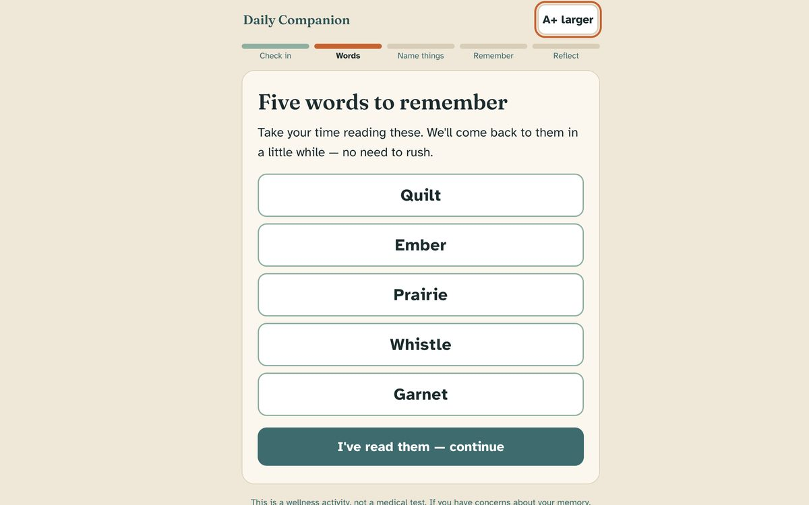
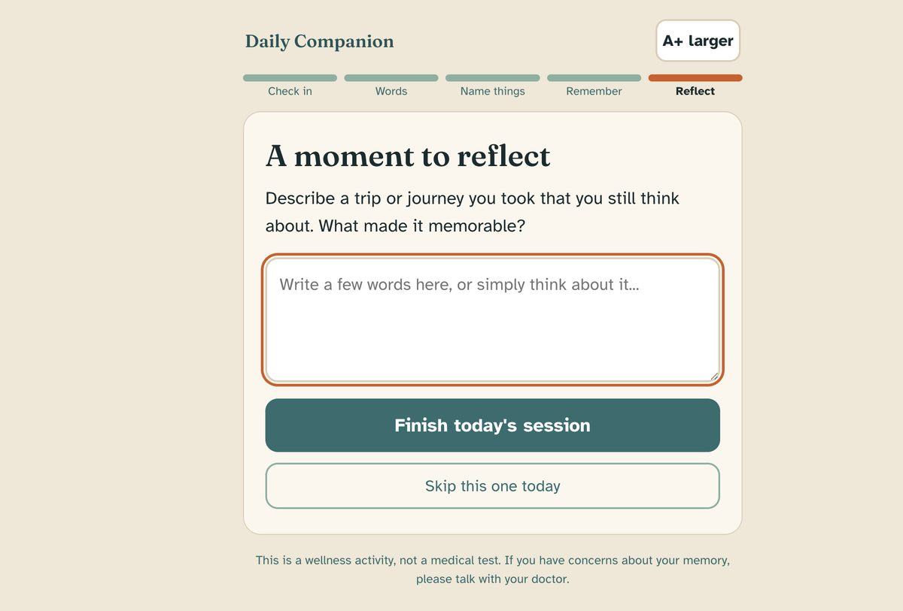

The problem
Cognitive health is one of the biggest concerns of aging, yet most brain-training apps are built for 30-year-olds and then given bigger fonts. For older adults, the hard part isn't the exercises. It's an interface that respects them.
Evidence that brain training prevents dementia is mixed, and this project doesn't pretend otherwise. What's better supported is that regular engagement, sleep, and routine matter, so the app is built around a calm daily habit: a mood and sleep check-in, delayed word recall, a verbal fluency task, and a reminiscence prompt.


Design decisions
Built for aging eyes
Atkinson Hyperlegible type, 20px base text, a persistent A+/A− toggle, and high contrast without pure-white glare.
One task per screen
Never a dashboard and never two questions at once, with 48px+ tap targets everywhere.
No timers, no penalties
Self-paced tasks, forgiving language, and a summary that celebrates showing up instead of the score.
Rest days are okay
Missed days appear as small dots, not gaps, so consistency is encouraged without guilt.
How the AI works
Days 1 to 30: a built-in program. The first month runs entirely from a curated bank of exercises that ships with the app, so it works offline and costs nothing to run.
Day 31 onward: fresh activities from Claude. Once the 30-day bank is used up, the app calls the Claude API to generate new daily activities as a small structured JSON payload: recall words, decoys, a fluency category, a reminiscence prompt, and a lifestyle nudge. The program never repeats itself, and all interaction, scoring, and charting still run locally.
Graceful fallback. With no API key, a network failure, or a malformed response, the session falls back to the built-in bank, so an older adult never sees an error.

Responsible AI check
The model generates, it never grades. Claude writes the day’s content, but scoring is deterministic and local, so an older adult is never judged by a language model.
Privacy by default. All personal data stays on the device. The only thing sent anywhere is the optional daily content request.
Honest framing. The app is a wellness routine, not a clinical screening tool, and it says so. It makes no claims about preventing cognitive decline.